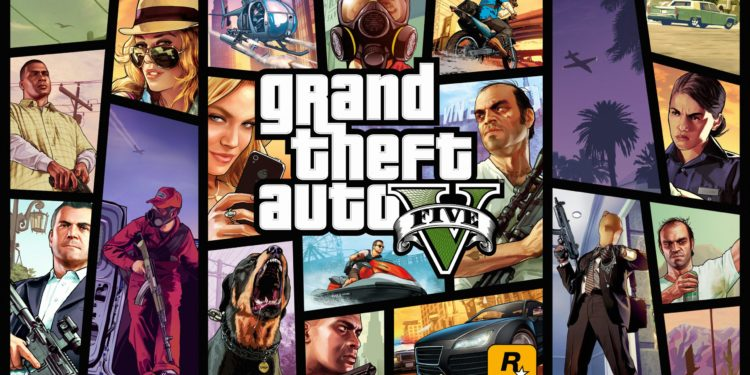

Grand Theft Auto V, um dos jogos mais populares já criados
Grand Theft Auto V foi lançado em 2013 para Playstation 3 e Xbox 360. Por conta do tamanho do sucesso
que o jogo representou para a rockstar games, GTA 5 foi lançado para Play 4 e Xbox One em 2014, já em 2015
o jogo chegou para computadores e, agora está para ser jogado no Playstation 5, Xbox Serie X e Series S em 2022.
Seu trailer não agradou muitos fãs, gerando deslikes no canal oficial da rockstar games e da Playstation no Youtube.
O produto de entretenimento mais lucrativo da história
Essa muita gente já sabe, mas é sempre bom reforçar o sucesso financeiro de GTA 5. Em apenas três dias, o game faturou US$ 1 bilhão,
um recorde que até hoje não foi superado por nenhum jogo ou filme. O número continua crescendo até hoje, fruto das 150 milhões de unidades
vendidas até agosto de 2021 e os diversos eventos de GTA Online. Imagine as novas atualizações e segundo rumores, o novo GTA 6,
uma grande franquia para bater o record financeiro da empresa, ainda mais se for baseado no GTA San Andreas, franquia que ficou para a história desde o século passado.
A preparação de cada ator para o papel
Com personalidades tão diferentes, dar vida a cada personagem foi um trabalho particular para cada um. As atuações começaram em 2010,
e foi a primeira experiência do trio de atores em um videogame; ainda por cima sendo recriados em 3D e tendo seus movimentos e corpos escaneados
com precisão (por isso eles são tão parecidos).
Começando por Ned Luke, que viveu Michael de Santa, o ator primeiro engordou 11 kg para chegar no físico digno de um milionário
aposentado em um programa de proteção à testemunha. Depois, ele estudou os jogos anteriores da franquia, em especial o GTA 4, e se inspirou nos
personagens Ward Cleaver (Hugh Beaumont) da sitcom norte-americana Leave it to Beaver e em Tony Montana (Al Pacino) de Scarface (1983).
Steven Ogg, que deu vida a Trevor Phillips, se inspirou no filme Bronson (2008), uma biografia do prisioneiro britânico mais violento dos anos 1970,
Michael Peterson (Tom Hardy) e seu alter ego psicopata Charles Bronson. A ideia era trazer as nuances de um anti-herói bem insano, mas ainda
trazer emoções e profundidade ao personagem do game.
Por fim, Shaw “Solo” Fonteno encontrou em Franklin Clinton alguém que poderia ser ele mesmo. Com uma história parecida, em uma infância no sul de Los Angeles em que
via de perto o tráfico, a criminalidade e a guerra de gangues, ele sabia como era a cabeça do protagonista. Outro detalhe é que o ator cresceu com a avó, algo parecido
com seu personagem que viva com a tia. De forma geral, ele pediu ajuda dos veteranos Luke e Ogg para atuar da melhor forma possível.
Motor gráfico próprio
Nada de unity para a criação, a produtora teve sua própria ferramenta para criar todas as mecânicas do quinto Grand Theft Auto. O Rockstar Advanced Game Engine
foi criado pela Rockstar San Diego e usado pela primeira vez em Table Tenis, lançado em 2006 para Xbox 360 e Nintendo Wii, e mais tarde em outros grandes
sucessos como GTA 4, Midnight Club Los Angeles, Red Dead Redemption, Max Payne 3 e Red Dead Redemption 2.
Viagens e Google Maps para criar os cenários
Los Santos e Sandy Shores são inspiradas em Los Angeles e outros lugares do sul da Califórnia. O local, como o jogo demonstra bem, é um local de entretenimento,
indo de desenvolvedoras de games, terra natal de grandes bandas até a poderosa Hollywood.
Para replicar um lugar tão grande e recheado de vida, a equipe de criação viajou para a região para entender cada aspecto da cidade dos anjos. Eles tiraram
mais de 250 mil fotos e gravaram horas de conteúdos de lugares icônicos para entender a arquitetura de cada prédio e ir além do que San Andreas foi capaz de representar.
Fora isso, eles também usam muito o serviço do Google para entender como funcionam as largas avenidas e como a cidade toda se conecta.
Dessa forma, a equipe praticamente criou uma versão 3D de Los Angeles, reproduzindo lugares marcantes como a praia de Santa Monica, o letreiro de Hollywood, o Observatório
Griffith, o Aeroporto Internacional de Los Angeles, o Teatro Chinês e tantos outros pontos turísticos locais.